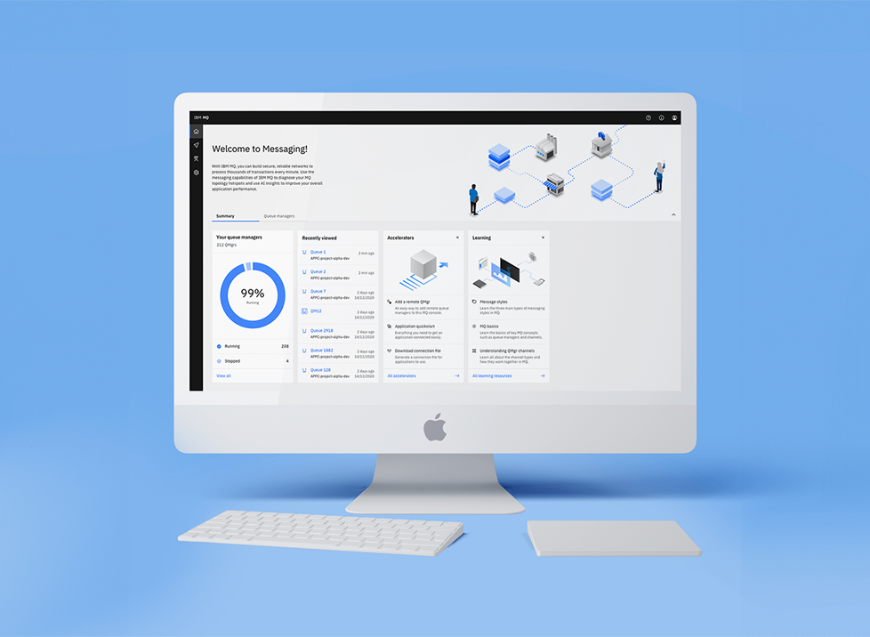
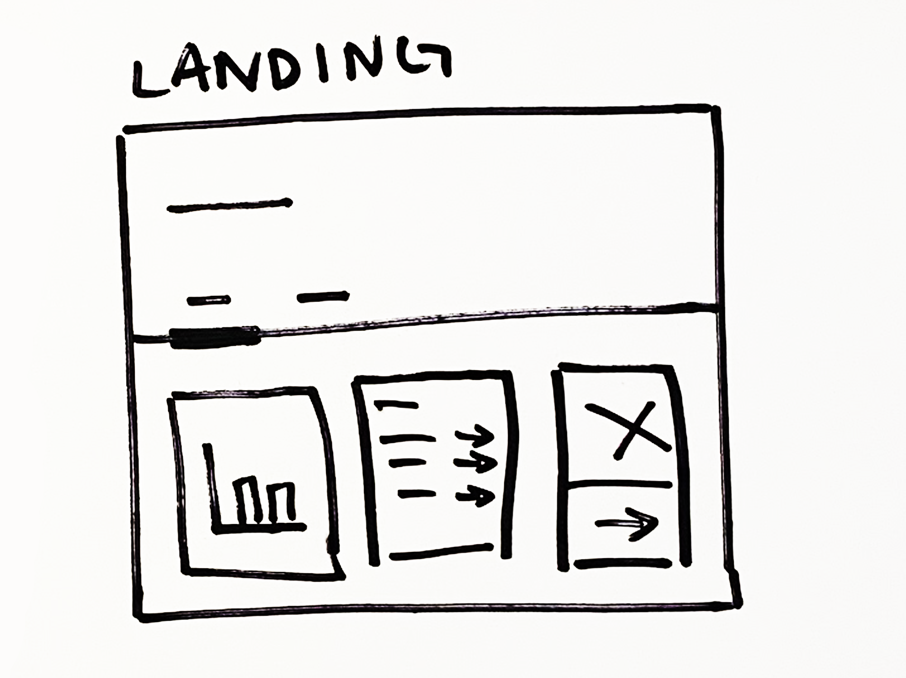
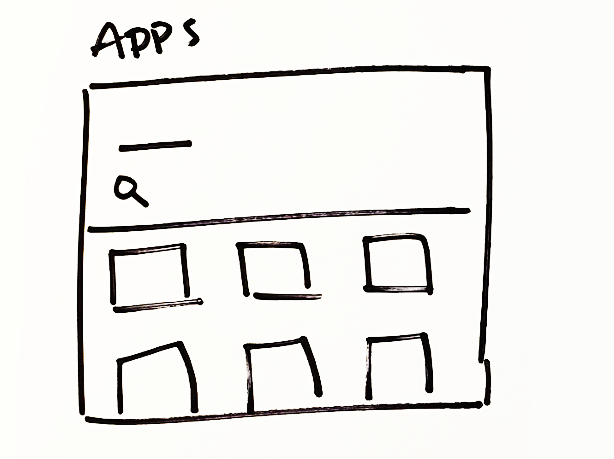
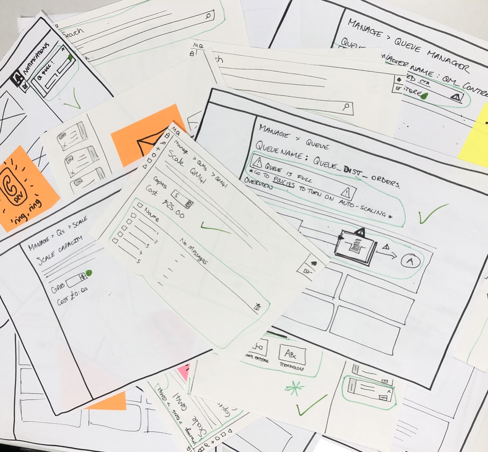
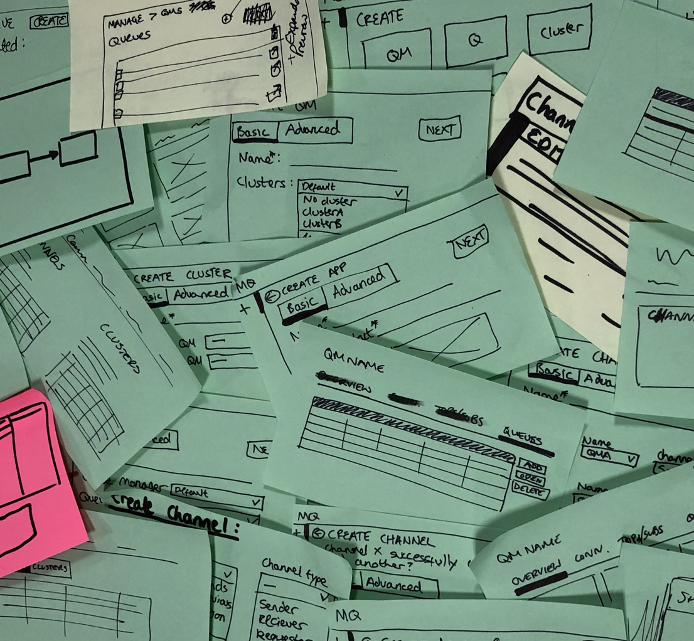
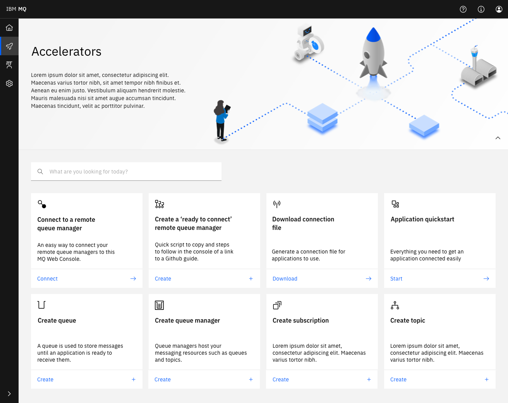
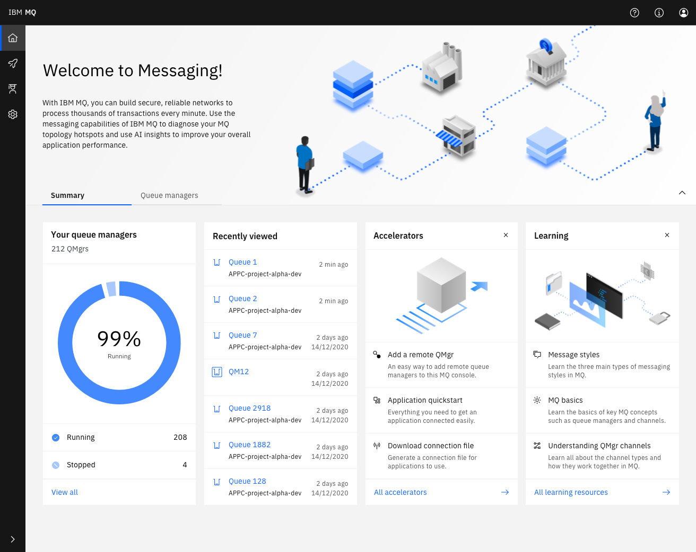

Project type: Reskin and enhancements
Role: Sole UI Designer, supportive UX and research
Key objectives: Enhance usability, integrate new features for better user interaction, and increase user satisfaction and engagement.

Problem: IBM MQ required a visual and functional update to improve the platform’s usability, user engagement, and overall satisfaction. The goal was to simplify interactions and introduce features that would elevate the user experience.
Outcome: The reskin and enhancements led to a more intuitive and visually appealing platform. The new design improved the user experience, with a significant boost in user satisfaction as measured by an increase in the Net Promoter Score (NPS) by over 30%.
The main challenge was to redesign the platform to improve usability while introducing new features, ensuring that the updated interface remained user-friendly and aligned with IBM’s brand identity. We needed to balance functionality with a clean, modern look.
We began by creating concept-level wireframes, engaging with the MQ Console team for feedback, and presenting initial designs at the North American Summit in Hursley. This iterative process ensured the design direction was validated by key stakeholders.


We developed a Minimum Viable Experience (MVE) that stripped back to essential features. This allowed us to focus on core functionalities, validate user flows, and ensure a solid foundation for the final product.


Throughout the project, we went through multiple iterations based on team feedback and user testing. We focused on refining the user journey and ensuring the final design aligned with our product vision.


Designing for IBM MQ meant making sure we balanced enterprise reliability with modern usability. This project reinforced the importance of iterative design and collaboration to achieve a product that met both user needs and business goals. I’m proud of the enhancements made to the platform, which have led to measurable improvements in user satisfaction and engagement.